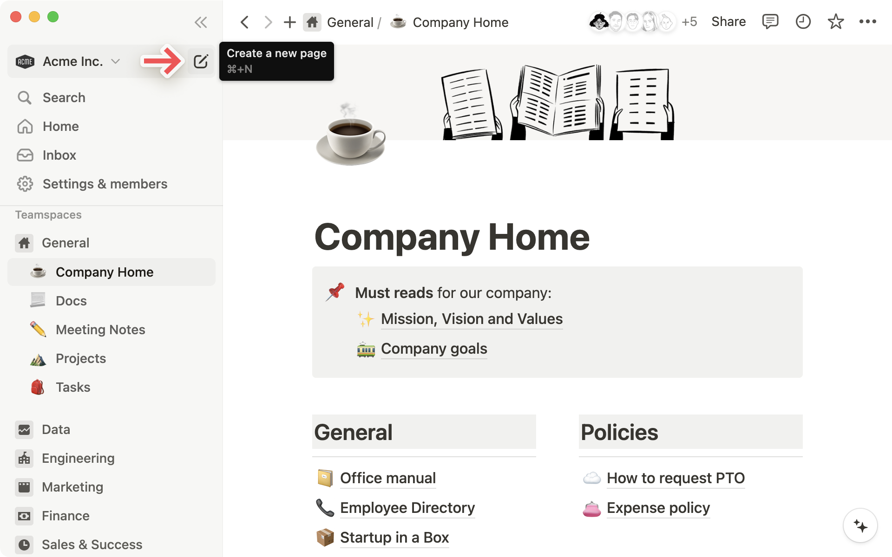
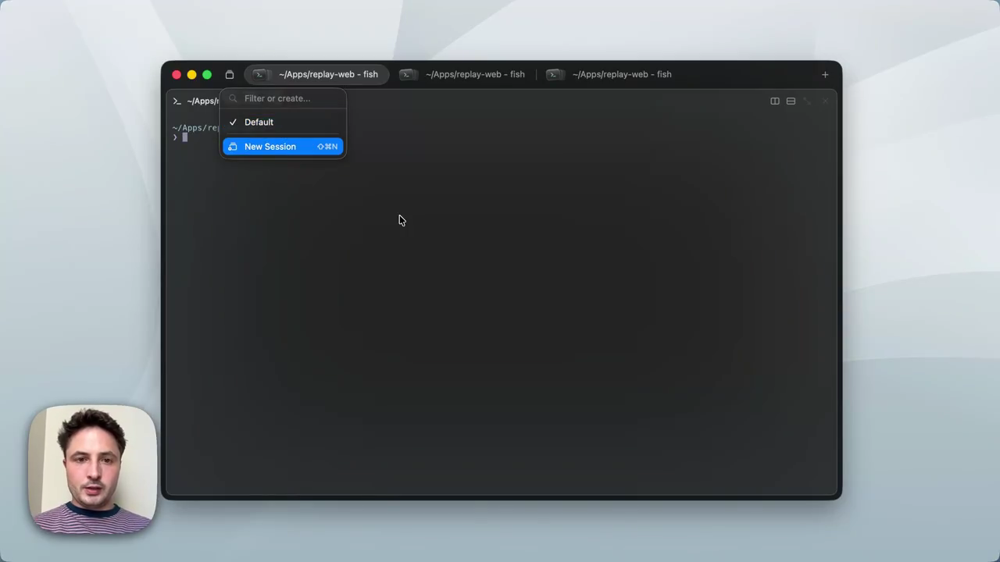
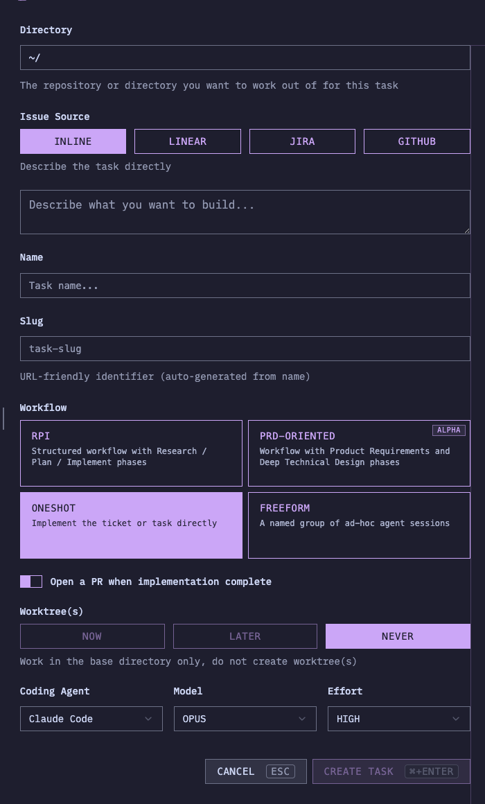
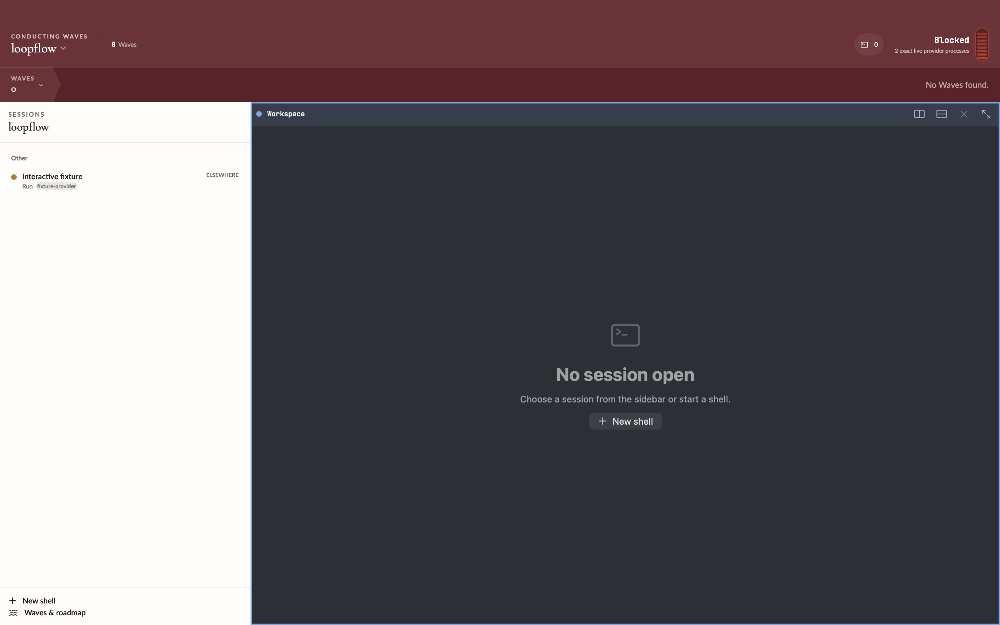

Notion

Enter first, organize later. A stable creation action and a keyboard shortcut open a blank canvas. Structure is optional after entry.
Official creation guide ↗One action creates a fresh worktree and opens the design conversation in your configured app or terminal. Compare where that action belongs. The sketch simplifies the header to study hierarchy; it is not a proposed removal of operational controls.
Start a design conversation, or pick up an existing one from the sidebar.
New task opens in your configured app or terminal.A — Navigation owns creation. Easy to find beside the selected repository; stays in one place while panes change. The new conversation inherits the repository context.
Interactive sketch · no worktrees or sessions are created
Enter first, organize later. A stable creation action and a keyboard shortcut open a blank canvas. Structure is optional after entry.
Official creation guide ↗
Separate the workspace from its views. The demo places session creation in a compact switcher beside terminal tabs. New session and new tab have different scopes.
Founder’s UI demo · 00:35 ↗
Make the handoff legible. Task setup leads to a session in its workspace. Borrow visible setup progress; Loopflow’s one-click path can use established defaults.
Official task walkthrough ↗Loopflow 0.12.19, built-in session fixture, captured 23 September 2026. Layout evidence only; counts and health indicators are not a live-state assessment.

Launch feedback is simulated. Keyboard shortcut and final button placement remain design proposals. Screenshots belong to their respective products; sources are linked above.